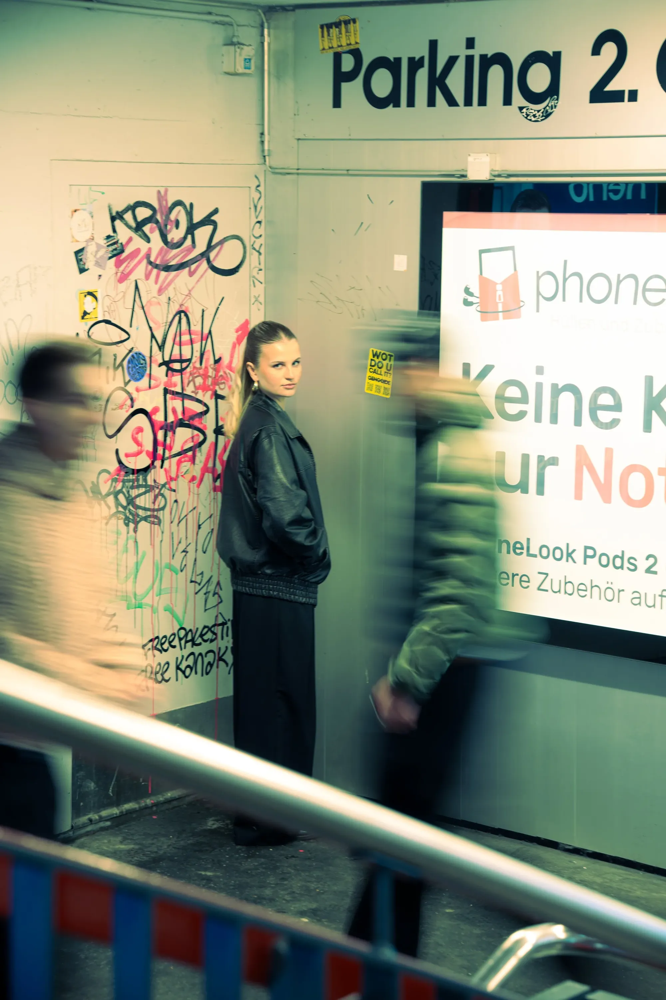
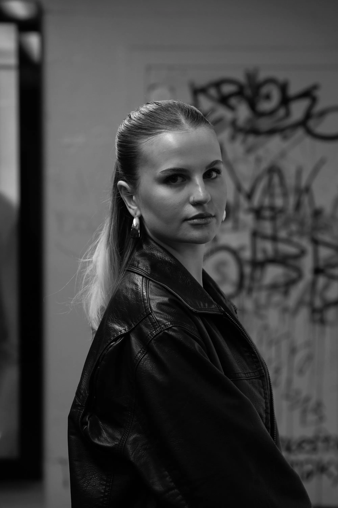
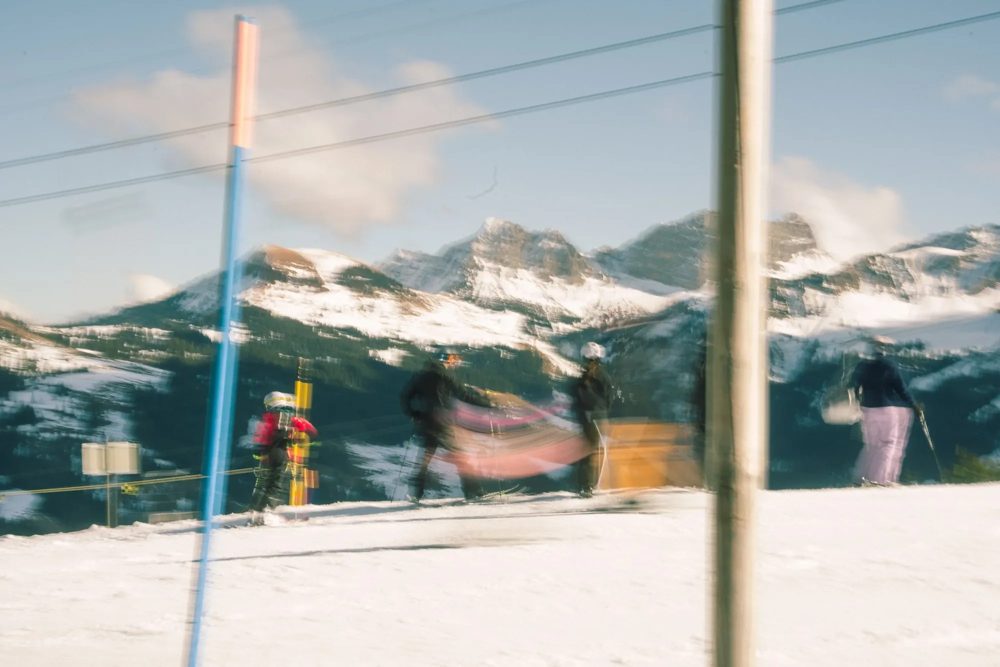

Creation.
That stays in mind.
Social Media, Design, Video & Ideen mit Persönlichkeit.
Als angehende Mediamatikerin arbeite ich an Social-Media-Projekten, Videos, Designs und kreativen Konzepten für Brands, Unternehmen und digitale Plattformen.
Stephanie Roth.
«Kreativität bedeutet für mich, Ideen sichtbar und spürbar zu machen.»

Über mich
Beruf
Mediamatikerin i. A.
Lehrjahr
3. Lehrjahr
Schultage
Montag & Dienstag
Alter
19 Jahre
Fokus
Social Media, Video, Foto & Design
Lieblingsprogramme
DaVinci Resolve & Lightroom
Ich bin Stephanie und gestalte Inhalte, die gesehen werden.
Ich interessiere mich für Medien, Gestaltung und Social Media. Nach meiner ersten Ausbildung im Gesundheitsbereich merkte ich, dass ich beruflich kreativer arbeiten möchte.
Heute mache ich die Ausbildung zur Mediamatikerin. Am liebsten arbeite ich an Videos, Fotos, Social-Media-Beiträgen und Designs. Ich mag es, aus einer Idee etwas Sichtbares zu machen.
Lebenslauf
Mein Weg.
Stationen, Erfahrungen und Projekte, die mich in Richtung Medien, Design und Social Media gebracht haben.
Feb. 2026 – Heute
Aktuell
Blue Social Media
Ausbildung zur Mediamatikerin · Swisscom / blue News
Ich produziere Content für blue News: Reels, Thumbnails, Captions, Bildposts und kurze News-Videos. Hier lerne ich, aktuelle Themen schnell, verständlich und visuell spannend zu erzählen.
Aug. 2025 – Feb. 2026
Video
Motion
Ausbildung zur Mediamatikerin · Swisscom Bern
Bei Motion arbeitete ich viel mit Kamera, Schnitt und visueller Kommunikation. Dort konnte ich mein Gefühl für Storytelling und Bildsprache weiterentwickeln.
Feb. 2025 – Juli 2025
Design
Creative Studio
Ausbildung zur Mediamatikerin · Swisscom Zürich
Im Creative Studio arbeitete ich an Design, Fotografie und Bildbearbeitung. Diese Zeit hat meinen Blick für Layout, Details und visuelle Wirkung geschärft.
Aug. 2024 – Jan. 2025
Start
[M]INI NET
Ausbildung zur Mediamatikerin · Swisscom Bern
Hier startete ich meine Ausbildung. Ich lernte die Grundlagen von Medienproduktion, Gestaltung, Fotografie und digitalen Projekten kennen.
Dez. 2023 – Juni 2024
Berufserfahrung
Detailhandel
Coop · Bern
Im Detailhandel lernte ich viel über Kundenkontakt, Teamarbeit und Verantwortung. Diese Zeit hat mich selbstständiger gemacht.
Aug. 2022 – Juli 2023
Erste Ausbildung
Fachfrau Gesundheit
Stiftung Lebensart · Konolfingen
Meine erste Ausbildung begann ich im Gesundheitsbereich. Ich nahm viel aus dieser Zeit mit, merkte aber auch, dass mein Weg stärker in Richtung Kreativität, Medien und Gestaltung führt.
5. – 9. Klasse
Schule
Brunnmatt Schulhaus
Bern
Vor meiner beruflichen Laufbahn besuchte ich von der 5. bis zur 9. Klasse das Brunnmatt Schulhaus in Bern.

01 Mein Ansatz
Ich mag Projekte, bei denen aus einer Idee etwas Echtes entsteht: ein Video, ein Bild, ein Design oder ein Beitrag, der hängen bleibt. Mir ist wichtig, dass Inhalte klar sind, gut aussehen und Menschen erreichen.
02 Meine Werte
Ich arbeite gerne kreativ, ehrlich und mit Gefühl für Details. Am liebsten probiere ich aus, denke visuell und suche nach Lösungen, die modern wirken und trotzdem zum Projekt passen.